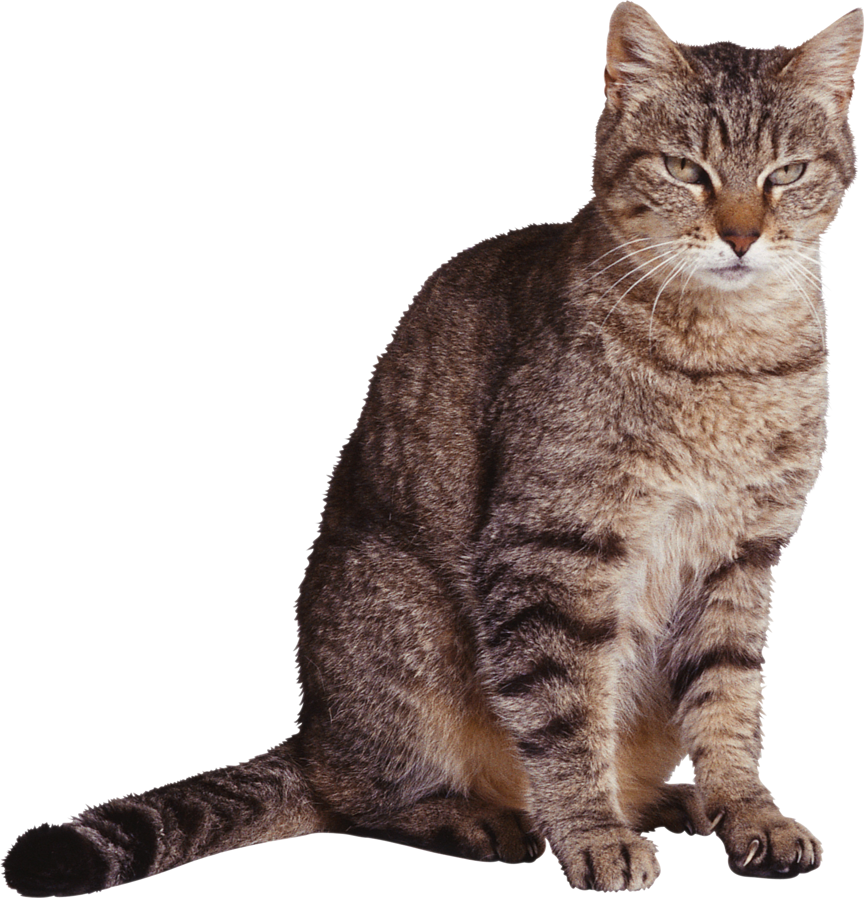
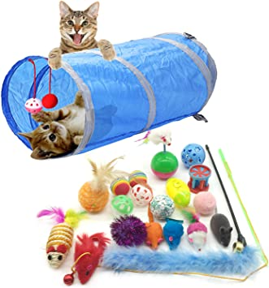

Katzen sind süße fellige tiere
nach unten was sind Katzen Körperbau und äußere Merkmale Katzenfutter Kaufen

! Die Katzen (Felidae) sind eine Familie aus der Ordnung der Raubtiere (Carnivora) innerhalb der Überfamilie der Katzenartigen (Feloidea). Sie sind auf allen Kontinenten außer in den Polarregionen und Australasien und Ozeanien verbreitet, wobei die domestizierte Hauskatze durch den Menschen auch in diese Regionen vorgedrungen ist. Eingeteilt werden sie in Großkatzen (wie beispielsweise Löwe, Tiger und Leopard) und Kleinkatzen (etwa Wildkatze, Luchs und Ozelot), wobei zu den Kleinkatzen auch große Vertreter wie der Puma und – nach neueren molekulargenetischen Erkenntnissen – der Gepard gehören. Mit der von der afrikanischen Falbkatze abstammenden Hauskatze wurde ein Vertreter der Familie durch Domestizierung zu einem weltweit gehaltenen Haustier. Katzen sind nahezu ausschließlich Fleischfresser und aktive Jäger. Im Erscheinungsbild und im Verhalten sind sich die meisten der heute lebenden Katzenarten sehr ähnlich.
Im Habitus ähneln sich die meisten heute lebenden Katzenarten recht stark. Sie haben in der Regel einen schlanken Körper, ein weiches Fell, kurze Gesichter und relativ kleine Schädel. Am stärksten vom Grundtypus weichen hiervon etwa der Gepard (Acinonyx jubatus) mit seinem eher hundeähnlichen Körper oder die Luchse (Lynx) mit einem eher gedrungenen Körperbau ab. Die Körpermaße und das Gewicht reichen von etwa zwei bis drei Kilogramm schweren Arten wie bei der Schwarzfußkatze (Felis nigripes) mit etwa 30 Zentimetern Kopf-Rumpf-Länge bis hin zum 300 Kilogramm schweren und mehr als zwei Meter langen männlichen Tiger (Panthera tigris). Sexualdimorphismus ist bei den meisten Arten nur wenig ausgeprägt, in der Regel werden Männchen etwa fünf bis zehn Prozent größer als Weibchen. Eine Ausnahme stellt der Löwe (Panthera leo) dar, bei dem die Männchen sich neben der Größe vor allem durch eine ausgeprägte Mähne von den Weibchen unterscheiden. Bei Arten mit großen Verbreitungsgebieten über mehrere Breitengrade kann die Größe zudem regional unterschiedlich sein; sie folgt dabei der Bergmannschen Regel, wonach die durchschnittliche Körpergröße zu den Polen hin ansteigt. Dies ist beispielsweise beim Puma (Puma concolor) zu beobachten, dessen Verbreitung sich vom südlichen Südamerika über die Äquatorgebiete im nördlichen Südamerika bis in den Norden von Kanada erstreckt und bei dem die Unterschiede in den Körpergrößen etwa hinsichtlich der Schädellänge von Tieren aus unterschiedlichen Regionen bis zu 25 Prozent ausmachen können.[1] Die Färbungen und vor allem die Fellzeichnungen sind bei den Katzen sowohl zwischen den Arten wie auch innerhalb einzelner Arten sehr variabel. Dabei reicht das Spektrum von weitgehend einfarbigen Tieren wie dem meist rotbraun gefärbten Puma oder dem gelbbraun gefärbten Löwen bis hin zu auffällig gefleckten und gestreiften Arten, die die Mehrzahl der Katzen darstellen. Die einfachste Form der Fellzeichnung ist eine mehr oder weniger ausgeprägte dunkle Fleckung auf hellem Grund, wie sie etwa beim Gepard ausgebildet ist. Beim Leoparden und beim Jaguar haben sich aus den Flecken ringförmige Rosetten aus Einzelflecken um ein helles Zentrum gebildet, beim Jaguar mit einem zusätzlichen dunklen Fleck im Zentrum. Bei anderen Arten wie etwa dem Ozelot oder dem Nebelparder kam es zu Modifizierungen der Flecken in Richtung langovaler Streifen, indem einzelne Flecken zu längeren Ketten verschmelzen. Beim Tiger und auch mehreren „getigerten“ Kleinkatzen (und Hauskatzen) besteht die Fellzeichnung dagegen vollständig aus vertikalen Streifen. Die unterschiedlichen Fellzeichnungen dienen in erster Linie der Tarnung und sind entsprechend in der Regel direkt gekoppelt mit den Lebensräumen der Tiere. So kommen die eher einfarbigen Arten in der Regel in offenen Lebensräumen vor, während reich gezeichnete Tiere vor allem in dichteren Vegetationsbereichen leben.[1] Zudem kommen bei mehreren Arten auch melanistische, schwarze, und seltener auch leuzistische, weiße, Formen vor. Besonders bekannt sind die als Schwarzer Panther bezeichneten melanistischen Formen des Leoparden und des Jaguars, Leuzismus liegt beispielsweise bei weißen Tigern vor.[1]